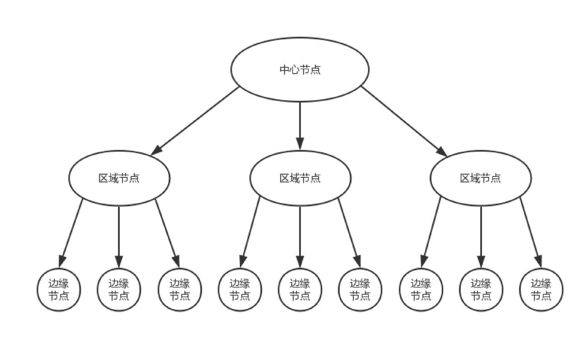
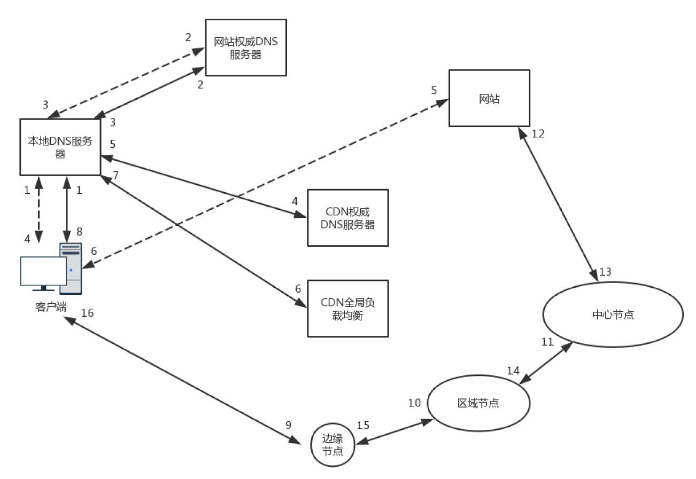

你去电商网站下单买个东西，这个东西一定要从电商总部的中心仓库送过来吗？原来基本是这样的，每一单都是单独配送，所以你可能要很久才能收到
你的宝贝。但是后来电商网站的物流系统学聪明了，他们在全国各地建立了很多仓库，而不是只有总部的中心仓库才可以发货。
电商网站根据统计大概知道，北京、上海、广州、深圳、杭州等地，每天能够卖出去多少书籍、卫生纸、包、电器等存放期比较长的物品。这些物品
用不着从中心仓库发出，所以平时就可以将它们分布在各地仓库里，客户一下单，就近的仓库发出，第二天就可以收到了。
全球有这么多的数据中心，无论在哪里上网，临近不远的地方基本上都有数据中心。是不是可以在这些数据中心里部署几台机器，形成一个缓存的
集群来缓存部分数据，那么用户访问数据的时候，就可以就近访问了。
这些分布在各个地方的各个数据中心的节点，就称为边缘节点。
由于边缘节点数目比较多，但是每个集群规模比较小，不可能缓存下来所有东西，因而可能无法命中，这样就会在边缘节点之上。有区域节点，规模
就要更大，缓存的数据会更多，命中的概率也就更大。在区域节点之上是中心节点，规模更大，缓存数据更多。如果还不命中，就只好回源网站访问了。

这就是 CDN 的分发系统的架构。CDN 系统的缓存，也是一层一层的，能不访问后端真正的源，就不打扰它。这也是电商网站物流系统的思路，北京
局找不到，找华北局，华北局找不到，再找北方局。
如何访问边缘节点？
CDN 分发网络也是一个分布在多个区域、多个运营商的分布式系统，用基于 DNS 的全局负载均衡的思路。

图中实线是在有 CDN 的情况下，在 web.com 这个权威 DNS 服务器上，会设置一个 CNAME 别名，指向另外一个域名 www.web.cdn.com，返
回给本地 DNS 服务器。
当本地 DNS 服务器拿到这个新的域名时，需要继续解析这个新的域名。这个时候，再访问的就不是 web.com 的权威 DNS 服务器了，
而是 web.cdn.com 的权威 DNS 服务器，这是 CDN 自己的权威 DNS 服务器。在这个服务器上，还是会设置一个 CNAME，指向另外一个域名，
也即 CDN 网络的全局负载均衡器。
接下来，本地 DNS 服务器去请求 CDN 的全局负载均衡器解析域名，全局负载均衡器会为用户选择一台合适的缓存服务器提供服务，选择的依据包括：
进行综合分析之后，全局负载均衡器会返回一台缓存服务器的 IP 地址。
缓存服务器响应用户请求，将用户所需内容传送到用户终端。如果这台缓存服务器上并没有用户想要的内容，那么这台服务器就要向它的上一级缓存
服务器请求内容，直至追溯到网站的源服务器将内容拉到本地。
保质期长的日用品比较容易缓存，因为不容易过期，对应到就像电商仓库系统里，就是静态页面、图片等，因为这些东西也不怎么变，所以适合缓存。
但是静态内容中，有一种特殊的内容，也大量使用了 CDN，这个就是流媒体。
CDN 支持流媒体协议，例如 RTMP 协议。在很多情况下，这相当于一个代理，从上一级缓存读取内容，转发给用户。由于流媒体往往是连续的，因而
可以进行预先缓存的策略，也可以预先推送到用户的客户端。
对于静态页面来讲，内容的分发往往采取拉取的方式，也即当发现未命中的时候，再去上一级进行拉取。但是，流媒体数据量大，如果出现回源，压
力会比较大，所以往往采取主动推送的模式，将热点数据主动推送到边缘节点。
对于流媒体来讲，很多 CDN 还提供预处理服务，也即文件在分发之前，经过一定的处理。例如将视频转换为不同的码流，以适应不同的网络带宽
的用户需求；再如对视频进行分片，降低存储压力，也使得客户端可以选择使用不同的码率加载不同的分片。这就是我们常见
的，“我要看超清、标清、流畅等”。
视频是要花大价钱买版权的，为了挣点钱，收点广告费，如果流媒体被其他的网站盗走，在人家的网站播放，那损失可就大了。
最常用也最简单的方法就是 HTTP 头的 refer 字段，当浏览器发送请求的时候，一般会带上 referer，告诉服务器是从哪个页面链接过来的，
服务器基于此可以获得一些信息用于处理。如果 refer 信息不是来自本站，就阻止访问或者跳到其它链接。
refer 的机制相对比较容易破解，所以还需要配合其他的机制。
一种常用的机制是时间戳防盗链。使用 CDN 的管理员可以在配置界面上，和 CDN 厂商约定一个加密字符串。
客户端取出当前的时间戳，要访问的资源及其路径，连同加密字符串进行签名算法得到一个字符串，然后生成一个下载链接，带上这个签名字符串
和截止时间戳去访问 CDN。
在 CDN 服务端，根据取出过期时间，和当前 CDN 节点时间进行比较，确认请求是否过期。然后 CDN 服务端有了资源及路径，时间戳，以及约定
的加密字符串，根据相同的签名算法计算签名，如果匹配则一致，访问合法，才会将资源返回给客户。
有两种模式:
CDN （Content Delivery Network）内容发布网络，其目的是通过在现有的 Internet 中增加一层新的网络架构 CACHE (缓存)层，将网站的
内容发布到最接近用户的网络‘边缘‘的节点，使用户可以就近取得所需的内容，提高用户访问网站的响应速度。从技术上解决由于网络带宽小、用户
访问量大、网点分布不均等原因，提高用户访问网站的响应速度。